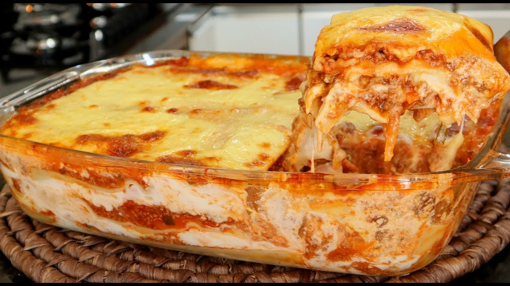

Bem Vindo ao Receitas da Eva!
Um blog para quem está sempre pensando na próxima refeição! Feito pela Eva, que ama cozinhar, comer e conversar!
Lasanha
Tempo de Preparo: 50min
Home // Ingredientes // Modo de Preparo

Ingredientes
- 500 g de massa de lasanha
- 2 caixas de creme de leite
- 3 colheres de farinha de trigo
- 500 g de mussarela
- 2 copos de leite
- 3 colheres de óleo
- 3 dentes de alho amassados
- 500 g de carne moída
- 3 colheres de manteiga
- 500 g de presunto
- sal a gosto
- 1 cebola ralada
- 1 caixa de molho de tomate
- 1 pacote de queijo ralado
Modo de Preparo
- Massa para a lasanha
Cozinhe a massa segundo as orientações do fabricante, despeje em um refratário com água gelada para não grudar e reserve.
- Molho à bolonhesa
Refogue o alho, a cebola, a carne moída, o molho de tomate, deixe cozinhar por 3 minutos e reserve.
- Molho branco
- Derreta a margarina, coloque as 3 colheres de farinha de trigo e mexa.
- Despeje o leite aos poucos e continue mexendo.
- Por último, coloque o creme de leite, mexa por 1 minuto e desligue o fogo.
- Montagem
- Despeje uma parte do molho à bolonhesa em um refratário, a metade da massa, a metade do presunto, a metade da mussarela, todo o molho branco e o restante da massa.
- Repita as camadas até a borda do recipiente.
- Finalize com o queijo ralado e leve ao forno alto (220° C), preaquecido, por cerca de 20 minutos.
Tabela de preço dos ingredientes
| Ingrediente |
Preço |
| 500 g de massa de lasanha |
5,00 R$ |
| 2 caixas de creme de leite |
3,00 R$ / Cada caixinha |
| Trigo |
5,00 R$ / O kg do trigo |
| 500 g de mussarela |
30,00 R$ |
| Leite |
5,00 R$ / O litro |
| Óleo |
9,00 R$ / O litro |
| Alho |
3,00 R$ |
| 500 g de carne moída |
15,00 R$ |
| Manteiga |
6,00 R$ |
| 500 g de Presunto |
10,00 R$ |
| Cebola |
5,00 R$ / O kg |
| 1 caixa de Molho de Tomate |
5,00 R$ |
| 1 pacote de queijo ralado |
7,00 R$ |